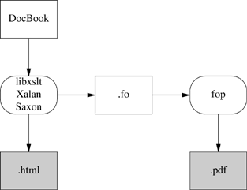

| [ Team LiB ] |
|
18.5 DocBookA great many major open-source projects are converging on DocBook as a standard format for their documentation. The advocates of XML-based markup seem to have won the theoretical argument against presentation-level and for structural-level markup, and an effective XML-DocBook toolchain is available in open source. Nevertheless, a lot of confusion still surrounds DocBook and the programs that support it. Its devotees speak an argot that is dense and forbidding even by computer-science standards, slinging around acronyms that have no obvious relationship to the things you need to do to write markup and make HTML or PostScript from it. XML standards and technical papers are notoriously obscure. In the rest of this section, we'll try to dispel the fog of jargon. 18.5.1 Document Type Definitions(Note: to keep the explanation simple, most of this section tells some lies, mainly by omitting a lot of history. Truthfulness will be fully restored in a following section.) DocBook is a structural-level markup language. Specifically, it is a dialect of XML. A DocBook document is a piece of XML that uses XML tags for structural markup. For a document formatter to apply a stylesheet to your document and make it look good, it needs to know things about the overall structure of your document. For example, in order to physically format chapter headers properly, it needs to know that a book manuscript normally consists of front matter, a sequence of chapters, and back matter. In order for it to know this sort of thing, you need to give it a Document Type Definition or DTD. The DTD tells your formatter what sorts of elements can be in the document structure, and in what order they can appear. What we mean by calling DocBook a 'dialect' of XML is actually that DocBook is a DTD드 rather large DTD, with somewhere around 400 tags in it.[1]
Lurking behind DocBook is a kind of program called a validating parser. When you format a DocBook document, the first step is to pass it through a validating parser (the front end of the DocBook formatter). This program checks your document against the DocBook DTD to make sure you aren't breaking any of the DTD's structural rules (otherwise the back end of the formatter, the part that applies your stylesheet, might become quite confused). The validating parser will either throw an error, giving you messages about places where the document structure is broken, or translate the document into a stream of XML elements and text that the parser back end combines with the information in your stylesheet to produce formatted output. Figure 18.1 diagrams the whole process. Figure 18.1. Processing structural documents.
The part of the diagram inside the dotted box is your formatting software, or toolchain. Besides the obvious and visible input to the formatter (the document source) you'll need to keep the two hidden inputs of the formatter (DTD and stylesheet) in mind to understand what follows. 18.5.2 Other DTDsA brief digression into other DTDs may help clarify what parts of the previous section are specific to DocBook and what parts are general to all structural-markup languages. TEI <http://www.tei-c.org/> (Text Encoding Initiative) is a large, elaborate DTD used primarily in academia for computer transcription of literary texts. TEI's Unix-based toolchains use many of the same tools that are involved with DocBook, but with different stylesheets and (of course) a different DTD. XHTML, the latest version of HTML, is also an XML application described by a DTD, which explains the family resemblance between XHTML and DocBook tags. The XHTML toolchain consists of Web browsers that can format HTML as flat ASCII, together with any of a number of ad-hoc HTML-to-print utilities. Many other XML DTDs are maintained to help people exchange structured information in fields as diverse as bioinformatics and banking. You can look at a list of repositories <http://www.xml.com/pub/rg/DTD_Repositories> to get some idea of the variety available. 18.5.3 The DocBook ToolchainNormally, what you'll do to make XHTML from your DocBook sources is use the xmlto(1) front end. Your commands will look like this: bash$ xmlto xhtml foo.xml bash$ ls *.html ar01s02.html ar01s03.html ar01s04.html index.html In this example, you converted an XML-DocBook document named foo.xml with three top-level sections into an index page and two parts. Making one big page is just as easy: bash$ xmlto xhtml-nochunks foo.xml bash$ ls *.html foo.html Finally, here is how you make PostScript for printing: bash$ xmlto ps foo.xml # To make PostScript bash$ ls *.ps foo.ps To turn your documents into HTML or PostScript, you need an engine that can apply the combination of DocBook DTD and a suitable stylesheet to your document. Figure 18.2 illustrates how the open-source tools for doing this fit together. Figure 18.2. Present-day XML-DocBook toolchain.
Parsing your document and applying the stylesheet transformation will be handled by one of three programs. The most likely one is xsltproc, the parser that ships with Red Hat Linux. The other possibilities are two Java programs, Saxon and Xalan. It is relatively easy to generate high-quality XHTML from either DocBook; the fact that XHTML is simply another XML DTD helps a lot. Translation to HTML is done by applying a rather simple stylesheet, and that's the end of the story. RTF is also simple to generate in this way, and from XHTML or RTF it's easy to generate a flat ASCII text approximation in a pinch. The awkward case is print. Generating high-quality printed output등hich means, in practice, Adobe's PDF (Portable Document Format)들s difficult. Doing it right requires algorithmically duplicating the delicate judgments of a human typesetter moving from content to presentation level. So, first, a stylesheet translates DocBook's structural markup into another dialect of XML듅O (Formatting Objects). FO markup is very much presentation-level; you can think of it as a sort of XML functional equivalent of troff. It has to be translated to PostScript for packaging in a PDF. In the toolchain shipped with Red Hat Linux, this job is handled by a TEX macro package called PassiveTeX. It translates the formatting objects generated by xsltproc into Donald Knuth's TEX language. TEX's output, known as DVI (DeVice Independent) format, is then massaged into PDF. If you think this bucket chain of XML to TEX macros to DVI to PDF sounds like an awkward kludge, you're right. It clanks, it wheezes, and it has ugly warts. Fonts are a significant problem, since XML and TEX and PDF have very different models of how fonts work; also, handling internationalization and localization is a nightmare. About the only thing this code path has going for it is that it works. The elegant way will be FOP, a direct FO-to-PostScript translator being developed by the Apache project. With FOP, the internationalization problem is, if not solved, at least well confined; XML tools handle Unicode all the way through to FOP. The mapping from Unicode glyphs to Postscript font is also strictly FOP's problem. The only trouble with this approach is that it doesn't work듳et. As of mid-2003, FOP is in an unfinished alpha state듯sable, but with rough edges and missing features. Figure 18.3 illustrates what the FOP toolchain looks like. Figure 18.3. Future XML-DocBook toolchain with FOP. FOP has competition. Another project called xsl-fo-proc aims to do the same things as FOP, but in C++ (and therefore both faster than Java and not relying on the Java environment). As of mid-2003, xsl-fo-proc is in an unfinished alpha state, not as far along as FOP. 18.5.4 Migration ToolsThe second biggest problem with DocBook is the effort needed to convert old-style presentation markup to DocBook markup. Human beings can usually parse the presentation of a document into logical structure automatically, because (for example) they can tell from context when an italic font means 'emphasis' and when it means something else such as 'this is a foreign phrase'. Somehow, in converting documents to DocBook, those sorts of distinctions need to be made explicit. Sometimes they're present in the old markup; often they are not, and the missing structural information has to be either deduced by clever heuristics or added by a human. Here is a summary of the state of conversion tools from various other formats. None of these do a completely perfect job; inspection and perhaps a bit of hand-editing by a human being will be needed after conversion.
man pages and other troff-based markups
18.5.5 Editing ToolsOne thing we do not have in mid-2003 is a good open-source structure editor for SGML/XML documents. LyX <http://www.lyx.org/> is a GUI word processor that uses LATEX for printing and supports structural editing of LATEX markup. There is a LATEX package that generates DocBook, and a how-to document <http://bgu.chez.tiscali.fr/doc/db4lyx/> describing how to write SGML and XML in the LyX GUI. GNU TeXMacs <http://www.math.u-psud.fr/~anh/TeXmacs/TeXmacs.html> is a project aimed at producing an editor that is good for technical and mathematical material, including displayed formulas. 1.0 was released in April 2002. The developers plan XML support in the future, but it's not there yet. Most people still hack DocBook tags by hand using either vi or emacs. 18.5.6 Related Standards and PracticesThe tools are coming together, if slowly, to edit and format DocBook markup. But DocBook itself is a means, not an end. We'll need other standards besides DocBook itself to accomplish the searchable-documentation-database objective. There are two big issues: document cataloging and metadata. The ScrollKeeper <http://scrollkeeper.sourceforge.net/> project aims directly to meet this need. It provides a simple set of script hooks that can be used by package install and uninstall productions to register and unregister their documentation. ScrollKeeper uses the Open Metadata Format <http://www.ibiblio.org/osrt/omf/>. This is a standard for indexing open-source documentation analogous to a library card-catalog system. The idea is to support rich search facilities that use the card-catalog metadata as well as the source text of the documentation itself. 18.5.7 SGMLIn previous sections, we have deliberately omitted a lot of DocBook's history. XML has an older brother, Standard Generalized Markup Language (SGML). Until mid-2002, no discussion of DocBook would have been complete without a long excursion into SGML, the differences between SGML and XML, and detailed descriptions of the SGML DocBook toolchain. Life can be simpler now; an XML DocBook toolchain is available in open source, works as well as the SGML toolchain ever did, and is easier to use. 18.5.8 XML-DocBook ReferencesOne of the things that makes learning DocBook difficult is that the sites related to it tend to overwhelm the newbie with long lists of W3C standards, massive exercises in SGML theology, and dense thickets of abstract terminology. See XML in a Nutshell [Harold-Means] for a good book-length general introduction. Norman Walsh's DocBook: The Definitive Guide is available in print <http://www.oreilly.com/catalog/docbook/> and on the Web <http://www.docbook.org/tdg/en/html/docbook.html>. This is indeed the definitive reference, but as an introduction or tutorial it's a disaster. Instead, read this: Writing Documents Using DocBook <http://xml.web.cern.ch/XML/goossens/dbatcern/>. This is an excellent tutorial. There is an equally excellent DocBook FAQ <http://www.dpawson.co.uk/docbook/> with a lot of material on styling HTML output. There is also a DocBook wiki <http://docbook.org/wiki/moin.cgi>. Finally, the The XML Cover Pages <http://xml.coverpages.org/> will take you into the jungle of XML standards if you really want to go there. |
| [ Team LiB ] |
|